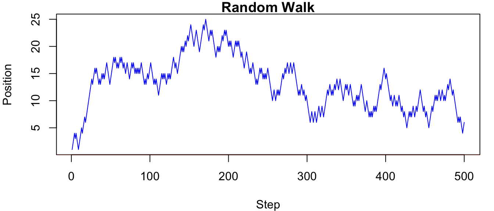
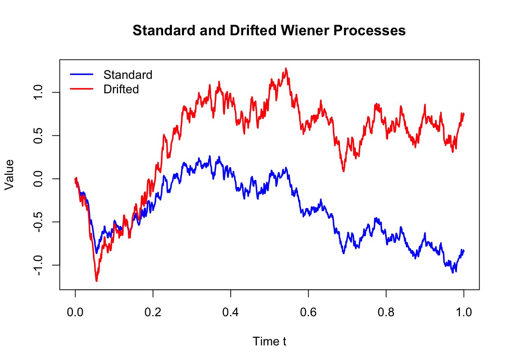
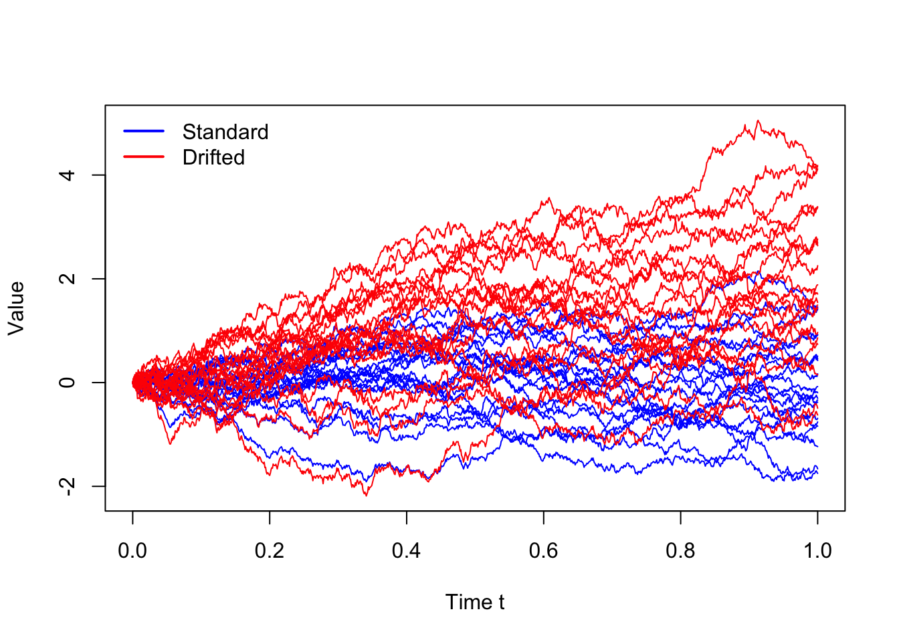
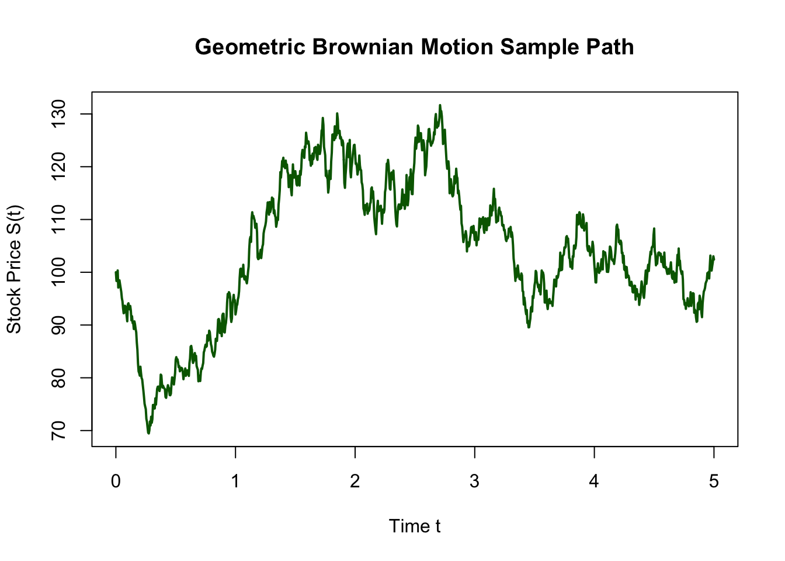

set.seed(1234)
n <- 1000 # number of time steps
p <- 0.3 # probability of success
bernoulli_process <- rbinom(n, size = 1, prob = p)
head(bernoulli_process, 20) [1] 0 0 0 0 1 0 0 0 0 0 0 0 0 1 0 1 0 0 0 0Unlike independent simulations, stochastic processes often involve dependence between time steps. For example, the number of customers in a queue at time \(t+1\) depends on the number at time \(t\), along with new arrivals and departures. This introduces new challenges:
how to model dependence, how to simulate trajectories efficiently, and how to analyse long-run behaviour.
From a simulation perspective, stochastic processes are particularly important because many systems of interest are too complex for analytical solutions. As highlighted earlier in the course, simulation provides a flexible way to study such systems when mathematical formulas are unavailable or intractable. By simulating sample paths of a stochastic process, we can estimate quantities such as long-run averages, probabilities of extreme events, and system performance under different scenarios.
In this chapter, we will introduce the fundamental ideas and tools for working with stochastic processes.
Stochastic processes are used to model phenomena that evolve randomly over time, such as stock prices, queue lengths, population sizes, and many other systems in finance, computer science, and biology. The key components of a stochastic process include
A stochastic process is a collection of random variables indexed by time (or space), typically written as
\[ \{X_t : t \in T\} \]
where
The index set represents the “time” dimension of the process. The nature of the index set determines the type of process. In stochastic processes, we often distinguish between discrete-time and continuous-time processes based on the index set. The discrete-time processes are observed at fixed time steps, while continuous-time processes evolve continuously over time. Examples of discrete-time processes include daily stock prices, the number of customers every minute, or population size per generation. Examples of continuous-time processes include stock prices that evolve continuously, arrival times of customers, or radioactive decay.
| Index set \(T\) | Discrete-Time | Continuous-Time |
|---|---|---|
| Characteristic | Observed at fixed time steps | Evolves continuously over time |
| Notation | \(T = \{0,1,2,...\}\) | \(T \in [0,\infty)\) or \(T \in \mathbb{R}\) |
| Examples | daily stock prices, number of customers every minute, population size per year | arrival times of customers, radioactive decay, diffusion processes |
The state space represents the possible values that the process \(X_t\) can take at each time step. The state space determines the type of model we use, the simulation method, and the complexity of analysis. We can categorise state spaces into discrete state spaces, where the process takes values in a finite or countable set, or continuous state spaces, where the process takes values in an interval of real numbers. The choice of state space affects how we simulate the process and what kinds of questions we can answer about it. Examples of discrete state spaces include queue lengths, the number of infected individuals in an epidemic model, or the number of packets in a network. Examples of continuous state spaces include stock prices, temperature, or waiting times.
| State space \(S\) | Discrete State Space | Continuous State Space |
|---|---|---|
| Characteristic | Finite or countable values | Values in an interval |
| Notation | Finite categories: \(X_t \in \{1,...,K\}\) Counts: \(X_t \in \{0,1,2,...\}\) Integer: \(X_t \in \mathbb{Z}\) |
Unrestricted: \(X_t \in \mathbb{R}\) Positive: \(X_t > 0\) Bounded: \(a < X_t < b\) |
| Examples | queue length, number of infected individuals, number of packets in a network | stock prices, temperature, rainfall, waiting time, volatility processes |
To simulate a stochastic process, we need to specify the index set and the state space. The index set determines how we will iterate through time, while the state space determines the possible values that the process can take at each time step. In discrete-time processes, we typically loop over time steps, while in continuous-time processes, we may need to simulate event times or use approximations.
Unlike independent random variables, stochastic processes often exhibit dependence over time. For example, in a queueing system, the number of customers in the queue at time \(t+1\) depends on the number of customers at time \(t\), as well as new arrivals and departures. In a stock price model, the price at time \(t+1\) depends on the price at time \(t\) and other factors such as market conditions. This means that the value of the process at one time step can influence the value at the next time step.
The dependence structure of a stochastic process describes
How the random variables \(X_t\) are related to each other across time.
In other words:
This is an explicit component of a stochastic process definition, alongside the time index and state space.
The dependence structure can take various forms, such as:
The dependence structure is a fundamental aspect of stochastic processes and must be taken into account when modelling and simulating them. Understanding the dependence structure is crucial for accurate simulation and analysis of stochastic processes.
Stationarity is a key concept in stochastic processes that describes the statistical properties of the process over time. A stochastic process is said to be stationary if its statistical properties do not change over time. This means that the distribution of the process at any time \(t\) is the same as the distribution at any other time \(s\). Informally, we can say
Formally, a stochastic process is strictly stationary if all joint distributions are invariant under time shifts:
\[ (X_t, X_{t+1}, ..., X_{t+k}) \stackrel{d}{=} (X_{t+h}, X_{t+1+h}, ..., X_{t+k+h}) \quad \forall t, h, k. \]
\(\stackrel{d}{=}\) represents equality in distribution.
More commonly, we use the concept of weak stationarity (or second-order stationarity), which requires that the mean and autocovariance of the process are constant over time.
A process is weakly stationary if:
Stationarity is important because it allows us to make predictions and draw conclusions about the process based on past observations. For example, if a process is stationary, we can use historical data to estimate future behaviour without worrying about changes in the underlying distribution. Most stochastic processes are not stationary unless they are specifically designed to be so.
Bernoulli processes are a simple type of stochastic process that models a sequence of independent and identically distributed (i.i.d.) Bernoulli trials. Each trial results in either a success (1) with probability \(p\) or a failure (0) with probability \(1-p\).
The Bernoulli process is a discrete-time, discrete-state stochastic process that can be used to model various phenomena, such as coin flips, customer arrivals, or any binary outcome over time. The state space of a Bernoulli process is \(\{0, 1\}\), and the index set is typically the non-negative integers \(\{0, 1, 2, ...\}\).
set.seed(1234)
n <- 1000 # number of time steps
p <- 0.3 # probability of success
bernoulli_process <- rbinom(n, size = 1, prob = p)
head(bernoulli_process, 20) [1] 0 0 0 0 1 0 0 0 0 0 0 0 0 1 0 1 0 0 0 0import numpy as np
np.random.seed(1234)
n = 1000 # number of time steps
p = 0.3 # probability of success
bernoulli_process = np.random.binomial(n=1, p=p, size=n)
print(bernoulli_process[:20])Although Bernoulli processes have no temporal dependence, they are still stochastic processes because they are indexed collections of random variables.
Random walks are a fundamental type of stochastic process that models a path consisting of a sequence of random steps. A simple discrete-time, discrete-state random walk on the integers can be defined as follows: \[ X_0 = 0, \quad X_{t} = X_{t-1} + Z_t = \sum_{i=1}^t Z_i, \quad t = 1, 2, ... \]
where
\[ Z_t = \begin{cases}+1 & \text{with probability } p \\ -1 & \text{with probability } 1-p \end{cases} \]
and \(Z_t\) are i.i.d. random variables. The state space of a random walk is the set of integers \(\mathbb{Z}\), and the index set is typically the non-negative integers. Since \(Z_t\) are independent, the random walk has a Markov dependence structure, where the future state depends only on the current state. However, the random walk is not stationary, as its variance grows with time.
set.seed(1234)
n <- 500
steps <- sample(c(-1,1), n, replace=TRUE)
S <- cumsum(steps)
par(mar=c(4,4,1,1))
plot(S, type="l", lwd=1, main="Random Walk", xlab="Step", ylab="Position", col="blue")
abline(h=0, col="red")
import numpy as np
import matplotlib.pyplot as plt
# Set seed for reproducibility
np.random.seed(1234)
n = 500
# Sample steps from {-1, 1}
steps = np.random.choice([-1, 1], size=n, replace=True)
# Cumulative sum
S = np.cumsum(steps)
# Plot
plt.figure(figsize=(6, 4))
plt.plot(S, linewidth=1, color="blue")
plt.axhline(0, color="red")
plt.title("Random Walk")
plt.xlabel("Step")
plt.ylabel("Position")
plt.tight_layout()
plt.show()Wiener processes, also known as Brownian motion, are a continuous-time, continuous-state stochastic process that models the random movement of particles suspended in a fluid.
A Wiener process \(W_t\) has the following properties:
If the mean of the increments is non-zero, we can introduce a drift term \(\mu\) to model a process with a trend, and if the variance of the increments is not equal to 1, we can introduce a volatility term \(\sigma\) to model a process with different levels of variability. Therefore, a generalised Wiener process can be defined as
\[ X_t = \mu t + \sigma W_t. \]
The Wiener process can be considered as a continuous-time analogue of the random walk, where the steps become infinitesimally small and occur infinitely often. It is widely used in quantitative finance, for example, in Black-Scholes-Merton model for option pricing, and in physics to model diffusion processes.
set.seed(1234)
T <- 1
n <- 1000
dt <- T / n # increment size
t <- seq(0, T, length.out = n + 1) # time points from "0" to T
# Standard Wiener increments
dW <- rnorm(n, mean = 0, sd = sqrt(dt))
# Standard Wiener process
# W(t) ~ N(0, t)
W <- c(0, cumsum(dW))
# Drifted Wiener process
# X(t) ~ N(mu*t, sigma^2 * t)
mu <- 2.0
sigma <- 1.5
X <- mu * t + sigma * W
plot(
t, W, type = "l", lwd = 2, col = "blue",
xlab = "Time t", ylab = "Value", ylim = range(W, X),
main = "Standard and Drifted Wiener Processes"
)
lines(t, X, lwd = 2, col = "red")
legend(
"topleft",
legend = c("Standard", "Drifted"),
col = c("blue", "red"),
lwd = 2, bty = "n"
)
import numpy as np
import matplotlib.pyplot as plt
# Set seed for reproducibility
np.random.seed(1234)
T = 1.0
n = 1000
dt = T / n # increment size
t = np.linspace(0, T, n + 1) # time points from 0 to T
# Standard Wiener increments
dW = np.random.normal(loc=0.0, scale=np.sqrt(dt), size=n)
# Standard Wiener process W(t) ~ N(0, t)
W = np.concatenate(([0.0], np.cumsum(dW)))
# Drifted Wiener process X(t) ~ N(mu * t, sigma^2 * t)
mu = 2.0
sigma = 1.5
X = mu * t + sigma * W
# Plot
plt.figure(figsize=(6, 4))
plt.plot(t, W, linewidth=2, color="blue", label="Standard")
plt.plot(t, X, linewidth=2, color="red", label="Drifted")
plt.xlabel("Time t")
plt.ylabel("Value")
plt.title("Standard and Drifted Wiener Processes")
plt.ylim(min(W.min(), X.min()), max(W.max(), X.max()))
plt.legend(loc="upper left", frameon=False)
plt.tight_layout()
plt.show()The above plot shows one realisation of sample paths of a standard Wiener process (in blue) and a drifted Wiener process (in red). The drifted Wiener process has a positive trend due to the drift term \(\mu\), while the standard Wiener process fluctuates around zero. Both processes exhibit random fluctuations, but the drifted process tends to increase over time, while the standard process does not have a trend. To better illustrate the variability, we can simulate multiple sample paths of both processes.
set.seed(1234)
n <- 1000
m <- 20
dt <- 1 / n
t <- seq(0, 1, length.out = n + 1)
Z <- matrix(rnorm(n * m, mean = 0, sd = sqrt(dt)), n, m)
W <- rbind(0, apply(Z, 2, cumsum))
mu <- 2.0
sigma <- 1.5
Wd <- mu * t + sigma * W
ylim <- range(W, Wd)
matplot(t, W, type = "l", lty = 1, col = "blue",
ylim = ylim, xlab = "Time t", ylab = "Value")
matlines(t, Wd, lty = 1, col = "red")
legend("topleft", legend = c("Standard", "Drifted"),
col = c("blue", "red"), lwd = 2, bty = "n")
import numpy as np
import matplotlib.pyplot as plt
# Set seed for reproducibility
np.random.seed(1234)
n = 1000
m = 20
dt = 1 / n
t = np.linspace(0, 1, n + 1)
# Standard Wiener increments: Z ~ N(0, dt)
Z = np.random.normal(loc=0.0, scale=np.sqrt(dt), size=(n, m))
# Standard Wiener processes
W = np.vstack([np.zeros(m), np.cumsum(Z, axis=0)])
mu = 2.0
sigma = 1.5
# Drifted Wiener processes
Wd = mu * t[:, None] + sigma * W
# Plot limits
ylim = (min(W.min(), Wd.min()), max(W.max(), Wd.max()))
# Plot
plt.figure(figsize=(6, 4))
plt.plot(t, W, color="blue", linewidth=1)
plt.plot(t, Wd, color="red", linewidth=1)
plt.xlabel("Time t")
plt.ylabel("Value")
plt.ylim(ylim)
from matplotlib.lines import Line2D
legend_elements = [
Line2D([0], [0], color="blue", lw=2, label="Standard"),
Line2D([0], [0], color="red", lw=2, label="Drifted"),
]
plt.legend(handles=legend_elements, loc="upper left", frameon=False)
plt.tight_layout()
plt.show()This plot shows multiple (20) sample paths of the standard Wiener process (in blue) and the drifted Wiener process (in red). The standard Wiener process fluctuates around zero, while the drifted Wiener process exhibits an upward trend due to the positive drift \(\mu\). Both processes have continuous paths, but the drifted process has a different mean and variance structure compared to the standard Wiener process.
Geometric Brownian motion (GBM) is a continuous-time stochastic process that models the evolution of stock prices \(S_t\) and other financial assets. It is also known as the exponential Brownian motion because it is defined as the exponential of a Brownian motion with drift. The GBM process is widely used in finance due to its ability to capture key features of asset price dynamics, such as the log-normal distribution of returns and the non-negativity of prices. In particular, the GBM process is used in the Black-Scholes model for option pricing and in various other financial models.
A stochastic process \(S_t\) is said to follow a geometric Brownian motion if it can be expressed as the solution to the following stochastic differential equation (SDE): \[ dS_t = \mu S_t dt + \sigma S_t dW_t \]
where \(\mu\) is the drift (expected return), \(\sigma\) is the volatility, and \(W_t\) is a standard Wiener process.
The solution to this SDE can be written in closed form as \[ \boxed{S_t = S_0 \exp\left( \left(\mu - \frac{\sigma^2}{2}\right) t + \sigma W_t \right)} \]
where \(S_0\) is the initial price.
Also, the log returns of the GBM process are normally distributed, which can be shown as follows:
\[ \log\left(\frac{S_t}{S_0}\right) \sim N\left(\left(\mu - \frac{\sigma^2}{2}\right) t, \sigma^2 t\right) \]
Example: Simulating stock prices using Geometric Brownian Motion with the following parameters:
set.seed(1234)
# Parameters
S0 <- 100
mu <- 0.1
sigma <- 0.2
T <- 5
n <- 1000
dt <- T / n
t <- seq(0, T, length.out = n + 1)
# Simulate standard Wiener process
W <- c(0, cumsum(rnorm(n, mean = 0, sd = sqrt(dt))))
# Simulate Geometric Brownian Motion
S <- S0 * exp((mu - 0.5 * sigma^2) * t + sigma * W)
# Plot the sample path of Geometric Brownian Motion
plot(t, S, type = "l", lwd = 2, col = "darkgreen",
xlab = "Time t", ylab = "Stock Price S(t)",
main = "Geometric Brownian Motion Sample Path")
import numpy as np
import matplotlib.pyplot as plt
# Set seed for reproducibility
np.random.seed(1234)
# Parameters
S0 = 100
mu = 0.1
sigma = 0.2
T = 5
n = 1000
dt = T / n
t = np.linspace(0, T, n + 1)
# Simulate standard Wiener process
W = np.concatenate(([0.0], np.cumsum(
np.random.normal(loc=0.0, scale=np.sqrt(dt), size=n)
)))
# Simulate Geometric Brownian Motion
S = S0 * np.exp((mu - 0.5 * sigma**2) * t + sigma * W)
# Plot the sample path
plt.figure(figsize=(6, 4))
plt.plot(t, S, linewidth=2, color="darkgreen")
plt.xlabel("Time t")
plt.ylabel("Stock Price S(t)")
plt.title("Geometric Brownian Motion Sample Path")
plt.tight_layout()
plt.show()The sample path of the Geometric Brownian Motion shows how the stock price evolves over time, starting from an initial price of 100. The price exhibits random fluctuations due to the volatility term, while also showing an overall upward trend due to the positive drift. The GBM model captures the key features of stock price dynamics, making it a fundamental tool in financial modelling and option pricing.